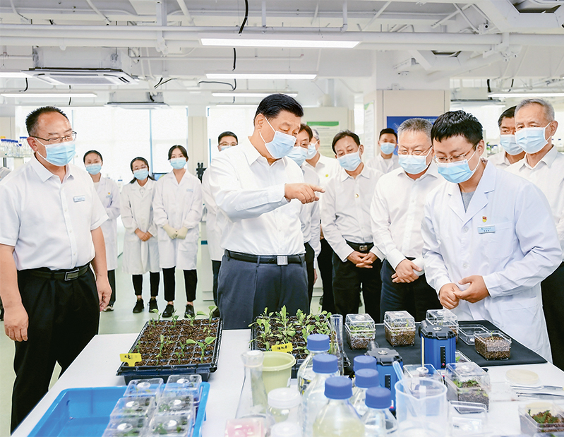

2022年6月6日上午，中共中央宣传部举行“中国这十年”系列主题新闻发布会，介绍党的十八大以来“实施创新驱动发展战略 建设科技强国”有关情况。 十年来，我国科技投入大幅提高，全社会研发投入从2012年的1.03万亿元增长到2021年的2.79万亿元，研发投入强度从1.91%增长到2.44%。在党中央坚强领导和全国科技界及广大科技工作者的共同努力下， 我国科技事业发生了历史性、整体性、格局性重大变化，成功进入创新国家行列，走出了一条从人才强、科技强，到产业强、经济强、国家强的发展道路。
“人才强、科技强，是产业强、经济强、国家强的前提，是高质量发展最持久的动力和最重要的引领力。”科技部部长王志刚在会上指出，我国更加重视人才第一资源的作用，在创新实践中发现、培养、造就人才。 王志刚表示，在人才方面，政府要做的是创造更好的环境、更好的生态，让更多的人能够成为人才，特别是科技创新方面的人才。为此，国家出台了科技体制改革三年攻坚方案，包括深化科技评价和激励制度改革、深化科研项目和经费管理改革、破解科技成果转化难题、弘扬科学家精神等等。 国家自然科学基金实施的人才资助体系升级计划，也得到了科技界的广泛认可。据国家自然科学基金委主任李静海介绍，饱受关注的“杰青”项目每年资助量由200项增加到315项，“优青”项目由400项增加到630项。青年项目过去4年间共资助了7.5万项，一大批年轻人在这个项目的支持下进入了基础研究领域，资助项目数逐年增长。 学界同样为科研发展创造了良好氛围。据中科院院长侯建国介绍，为激励科研人员潜心科研，中科院实施了特聘研究岗位制度，给予科学家相对稳定的支持；设立了基础研究领域青年团队支持计划，鼓励拔尖青年人才敢于挑战科学难题，开展“从0到1”的原创研究。 同时，中科院加强了青年科技人才的储备，已经选聘12000多名以博士后为主体的特别研究助理，深挖人才的“蓄水池”。过去十年，院属的中国科学技术大学和中国科学院大学，累计向社会培养和输送了近15万毕业生。 十年来，我国人才在结构上、数量上都有了优化和提升，人才数量是全球第一，同时高水平人才不断成长涌现，在开拓新的领域、承担领军项目，以及科学发现前沿预判等方面都涌现了一批高水平人才。 据世界知识产权组织发布的全球创新指数最新排名，中国从2012年的第34位上升到2021年的第12位。中国在全球创新版图中的地位和作用发生了新的变化。“中国既是国际前沿创新的重要参与者，也是共同解决全球性问题的重要贡献者。”王志刚称。 产业转型升级加速
“人工智能、大数据、区块链、量子通信等新兴技术加快应用，培育了智能终端、远程医疗、在线教育等新产品、新业态。”王志刚介绍，我国数字经济规模居世界第二，技术突破打通了我国新兴产业的一些堵点，太阳能光伏、风电、新型显示、半导体照明、先进储能等产业规模也居世界前列。 科技的发展，也助推了传统产业的升级。据王志刚介绍，我国在新能源汽车领域持续20多年“三横三纵”技术研发，已形成较为完备的创新布局，新能源汽车产销量连续7年位居全球首位。立足我国以煤为主的能源禀赋，加快煤炭高效清洁利用研发攻关。连续15年布局研发百万千瓦级超超临界高效发电技术，供电煤耗最低可达到264克每千瓦时，大大低于全国平均值，也处于全球先进水平。目前，该技术和示范工程已经在全国推广，占煤电总装机容量的26%。 在重大工程建设方面，我国也取得了瞩目成就。特高压输电工程、北斗导航卫星全球组网、复兴号高速列车投入运行，这一系列重大工程都是由重大技术突破带动形成。研制成功“深海一号”钻井平台并正式投产，标志着我国海洋石油勘探开发进入1500米超深水时代。 “同时，我们还创办了一批具有国际竞争力的科技型领军企业，为解决经济社会发展中的关键科学问题和瓶颈制约作出了重要贡献。”王志刚道。 随着企业科技投入力度的不断加大，全国高新技术企业数量也在快速提高。据王志刚介绍，最新数据显示，我国企业科技投入力度占全社会研发投入比例已达76%以上，企业研发费用加计扣除比例从2012年的50%、2018年的75%，提升到目前科技型中小企业和制造业企业的100%。全国高新技术企业数量从十多年前的4.9万家，增加到2021年的33万家，研发投入占全国企业投入的70%，上交税额由2012年的0.8万亿元，增加到2021年的2.3万亿元。在上海证交所科创板、北京证交所上市的企业中，高新技术企业占比超过90%。 各领域创新、平衡发展
“科技在经济产业发展顺利的时候发挥重要作用，在经济产业发展遇到问题或者挑战的时候，科技也能发挥更大的作用。”王志刚指出，疫情期间，国家组织全国精锐力量开展疫情防控应急科研攻关，在疫苗、药物、检测试剂等方面取得一批科技创新成果，有力支撑新冠肺炎疫情防控。创新药物、国产高端医疗器械、先进诊疗技术让人民群众享受到更多高质量的创新成果。 “科技为民是我们科技领域重要方向，要做的事情也是最多的。”王志刚道。 科技使粮食安全更有把握。土地方面，我国聚焦正常耕地外的干旱半干旱土地、盐碱地、红黄壤，以及黑土地的保护和利用，十几年甚至二十年持续下功夫，如杨凌示范区针对干旱半干旱土地，20多年来形成一些种植方法、品种，已在全国推广，推广面积达到上亿亩。种业方面，我国在小麦、玉米、蔬菜、猪、禽类等方面都研发了自己的品种，特别在主粮方面都以中国品种为主。 科技保障能源安全。我国能源消费以煤为主，目前要达到双碳目标，需要通过科技使能源安全更有保障、更加环保、更加节能。“我国在超超临界发电方面不断取得新突破，特高压输电处于先进水平。基于煤的能源禀赋，新的科技成果使我们对环境的影响更小，这些都是科技成果解决能源安全、解决减排减碳的重要产品。”王志刚解释。 科技为人民生命健康筑牢坚固防线。王志刚介绍，2020年初新冠肺炎一开始，我国在7天之内分离病毒毒株，明确是新冠病毒，相较2003年抗击非典时速度要快得多。再过7天，就研制出了检测试剂，有了有效筛查手段。 科技促进区域创新发展，解决中国发展不平衡、不充分的问题。北京、上海、粤港澳大湾区创新引领辐射作用不断增强，三地研发投入占全国30%以上，北京、上海技术交易合同额中，分别有70%和50%输出到外地，这就是中心辐射带动示范作用。169家高新区聚集了全国1/3以上的高新技术企业，人均劳动生产力为全国平均水平的2.7倍，吸纳大学毕业生就业人数占全国比重9.2%。今年1-4月份，国家高新区营业收入13.7万亿元，同比增长7.8%，表现出较好的增长势头。